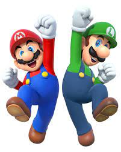
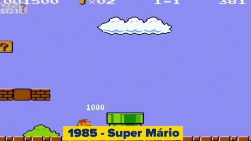

História do Mario e Luigi
Mario aparece pela primeira vez como “Jumpman” no jogo “Donkey Kong”, no qual ele precisa salvar sua namorada “Pauline” do gorila. Originalmente, ele era carpinteiro. No entanto, ao entrar nos canos em seu próprio jogo, “Mario Bros”, passou a ser considerado um encanador.
Luigi nasceu quando Shigeru Miyamoto se propôs a criar Mario Bros, após ser dito que Mario se assemelhava a um encanador, um conceito que ele queria estabelecer oficialmente (para sempre). Ele criou Luigi com o intuito do jogo poder ter dois jogadores, sendo os irmãos Mario e Luigi. Assim nasceu Luigi.

Jogo
“Mario Bros” é um jogo eletrônico lançado em 4 de abril de 1983, criado por Shigeru Miyamoto e desenvolvido pela Nintendo Research & Development 1.

Vídeo explicando a história do Mario
A História completa da Série Super Mario - A linha do tempo de acontecimentos
Filme do Mario
Lançamento. O filme foi provisoriamente agendado para ser lançado em 21 de dezembro de 2022. Foi lançado nos Estados Unidos em 5 de abril de 2023 pela Universal Pictures, e será liberado para streaming 45 dias depois no Peacock. Foi lançado no Brasil e em Portugal na mesma data, dia 6 de abril de 2023.
OBJETIVO
A relação entre Mario e Luigi é um dos destaques do filme, mostrando a importância do amor entre irmãos. Eles estão sempre juntos, se ajudando e se protegendo, mesmo nos momentos mais difíceis. Essa união é essencial para enfrentar os obstáculos que surgem pelo caminho.
Sobre o Filme